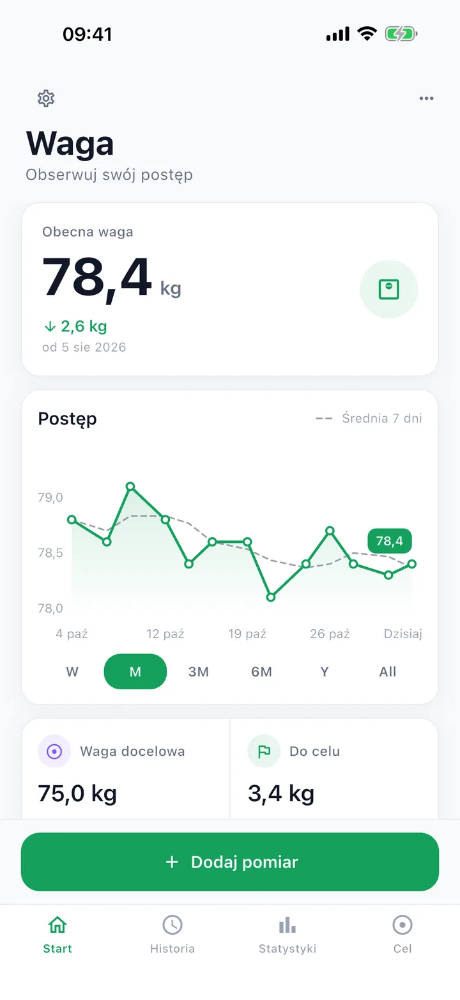
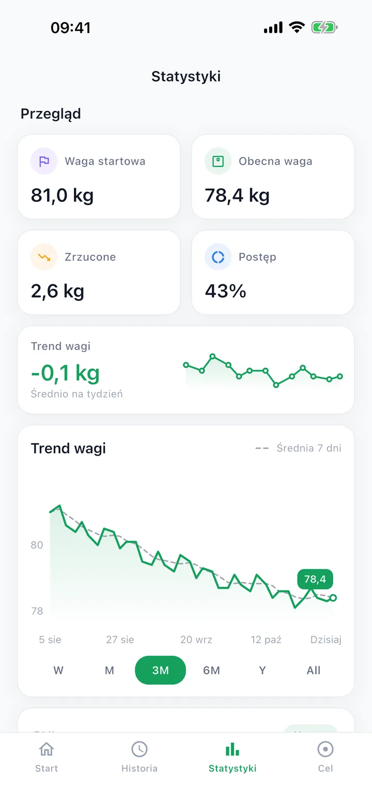
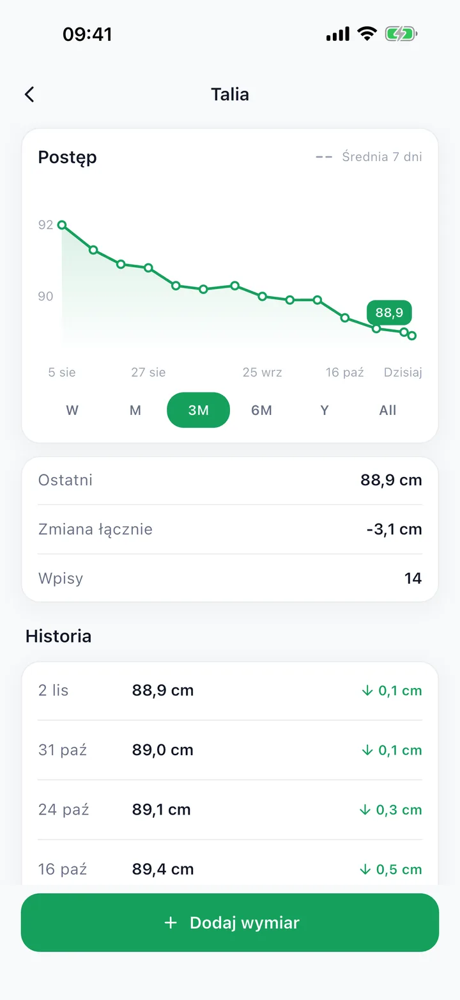
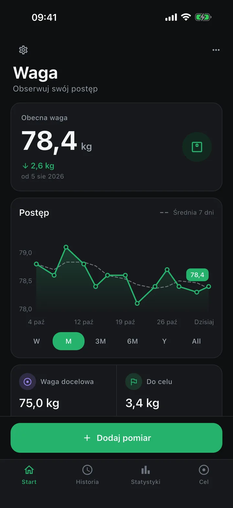

← Firewisp Studio
iPhone: w App StoreAndroid później
Tare – Weight Tracker
Jeden pomiar dziennie, trend, któremu ufasz, nic nie wychodzi poza telefon.
Tare to prywatny dziennik wagi. Wpisujesz dzisiejszą wagę dwoma dotknięciami i czytasz trend 7-dniowy zamiast dziennego szumu z wagi łazienkowej. Mierzysz talię i inne obwody, widzisz BMI z klasyfikacją WHO i źródłem pod ręką, ustawiasz cel i dostajesz prognozowaną datę. W całości offline: bez konta, reklam, analityki i zakupów. Kopia zapasowa to plik, który należy do Ciebie.

Ekrany



Co tu robisz
- Dwa dotknięcia dziennieKółko z podpowiedziami albo klawiatura. Jeden pomiar dziennie; poprawka go zastępuje, więc historia zostaje czysta.
- Trend, nie szumLinia średniej 7 dni, tempo tygodniowe i prognozowana data osiągnięcia celu.
- BMI ze źródłemKategorie WHO z pełnymi zakresami i linkiem do źródła, oznaczone jako orientacyjne, nie porada medyczna.
- Twoje, offlineBez konta, reklam i analityki. Eksport i import własnej kopii zapasowej.